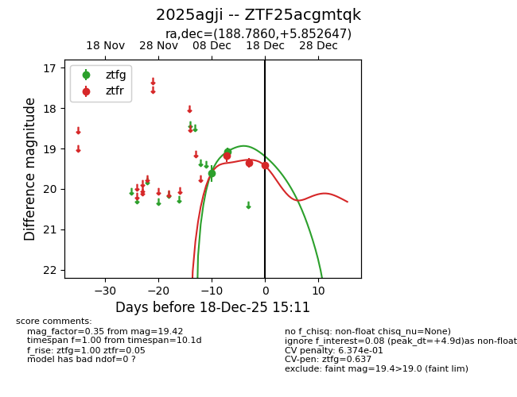
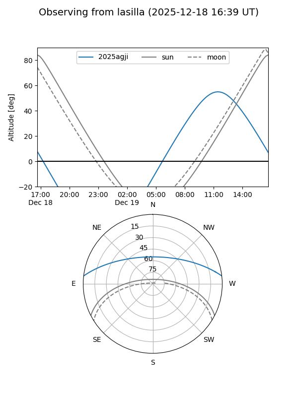
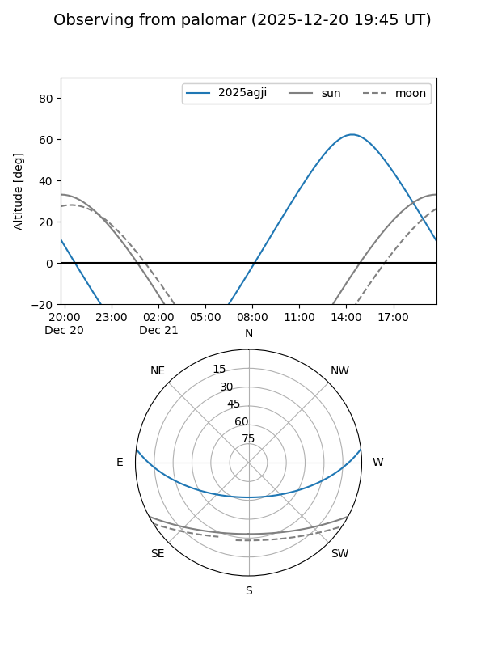

2025agji
Target 2025agji at 2025-12-18 11:18
Aliases and brokers:
FINK: fink-portal.org/ZTF25acgmtqk
Lasair: lasair-ztf.lsst.ac.uk/objects/ZTF25acgmtqk
ALeRCE: alerce.online/object/ZTF25acgmtqk
TNS: wis-tns.org/object/2025agji
YSE: ziggy.ucolick.org/yse/transient_detail/2025agji
alt names
ZTF25acgmtqk (ztf,fink_ztf)
2025agji (tns,yse)
Coordinates:
equatorial (ra, dec) = 188.7860,+5.85265
equatorial (HMS+DMS) = 12:35:08.65,+05:51:09.53
galactic (l, b) = (291.8776,+68.37399)
Photometry
last ztfg=19.07, ztfr=19.36
2 ztfg, 2 ztfr detections
Lightcurve

Visibility


Additional plots